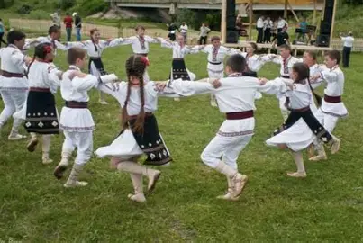
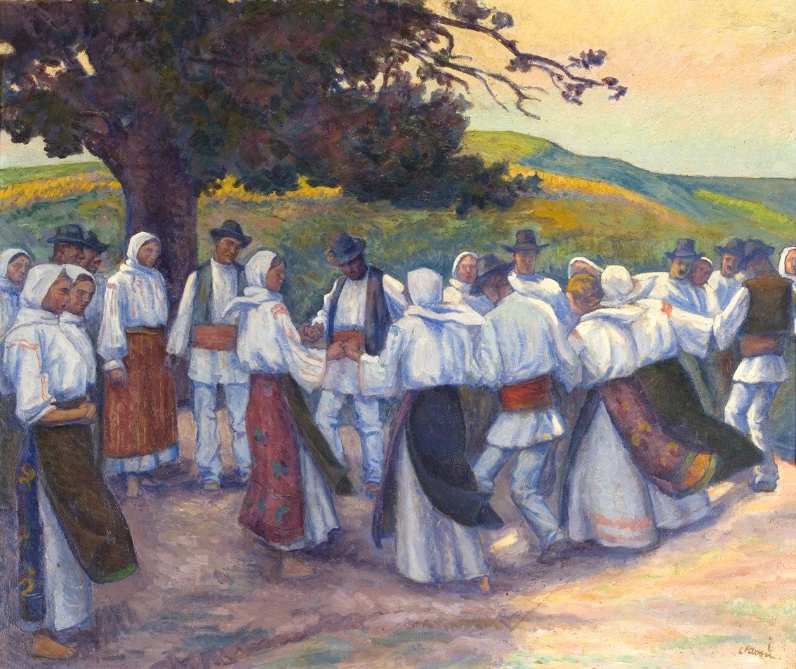
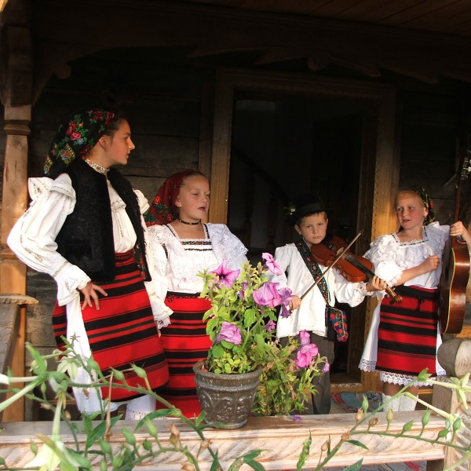
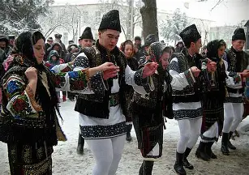
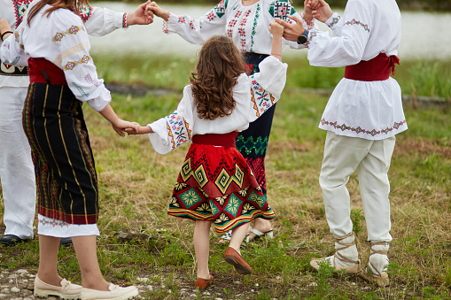
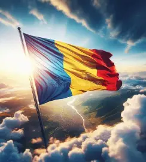
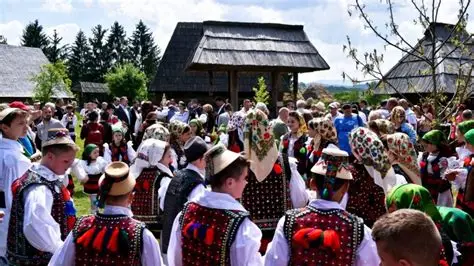
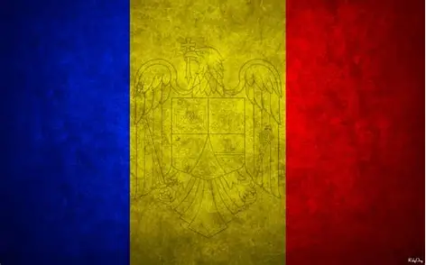

Portul Tradițional și Dansurile Populare din România
Site realizat de echipa SDVM – Colegiul Tehnic „Petru Maior”, clasa a IX‑a A
Site realizat de echipa SDVM – Colegiul Tehnic „Petru Maior”, clasa a IX‑a A
Cum au apărut hainele care spun povești fără cuvinte
Portul tradițional românesc este rezultatul a sute de ani de viață la sat, muncă și creativitate.
De la daci până azi, hainele au păstrat simplitate în croială și bogăție în detalii.
Astăzi îl vedem la festivaluri, nunți și evenimente culturale.

De ce nu este doar o haină, ci o carte deschisă despre cine suntem
Ia românească este cel mai cunoscut element al portului popular, cu simboluri vechi cusute manual.
Culorile au semnificații: roșu – energie, negru – pământ, albastru – cer, verde – natură.
Astăzi apare în modă, fotografie și spectacole.
Când muzica pornește, tradiția prinde viață
Dansurile populare s-au născut din nevoia oamenilor de a fi împreună.
Hora este simbolul comunității: un cerc în care toți sunt egali.
Călușarii sunt un dans ritualic spectaculos, parte din patrimoniul cultural.

Imagini sugestive





Cine a lucrat la acest site și la documentare
Echipă: SDVM
Membri: Calancea Sebastian, Goia David, Bobic Victor, Boboacă Matei
Clasa: a IX‑a A
Liceu: Colegiul Tehnic „Petru Maior”
Am realizat acest site pentru a prezenta tradițiile românești într-un mod modern și atractiv.
